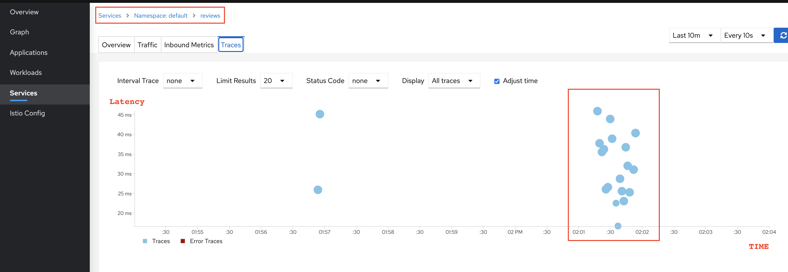

Advanced routing
Traffic Splitting (i.e. Canary, weight-based routing) using Virtual Service Subset

Step 1: Add version label to pods

# check pod labels for pod with app=reviews
kubectl get pod --show-labels --selector app=reviews
# output
NAME READY STATUS RESTARTS AGE LABELS
reviews-v1-7f6558b974-wtmj8 2/2 Running 0 23h app=reviews,istio.io/rev=default,pod-template-hash=7f6558b974,security.istio.io/tlsMode=istio,service.istio.io/canonical-name=reviews,service.istio.io/canonical-revision=v1,version=v1
reviews-v2-6cb6ccd848-hrpbg 2/2 Running 0 23h app=reviews,istio.io/rev=default,pod-template-hash=6cb6ccd848,security.istio.io/tlsMode=istio,service.istio.io/canonical-name=reviews,service.istio.io/canonical-revision=v2,version=v2
reviews-v3-cc56b578-dg7gq 2/2 Running 0 23h app=reviews,istio.io/rev=default,pod-template-hash=cc56b578,security.istio.io/tlsMode=istio,service.istio.io/canonical-name=reviews,service.istio.io/canonical-revision=v3,version=v3
Notice three different reviews pods have version=v1, version=v2, and version=v3. These pods are created from three separate deployments.
kubectl get deploy --selector app=reviews
# output
NAME READY UP-TO-DATE AVAILABLE AGE
reviews-v1 1/1 1 1 23h
reviews-v2 1/1 1 1 23h
reviews-v3 1/1 1 1 23h
You can also see this on Kiali dashboard

However, they are proxied by one service using app=reviews label
# show reviews service and its labels
kubectl get svc reviews --show-labels
# output
NAME TYPE CLUSTER-IP EXTERNAL-IP PORT(S) AGE LABELS
reviews ClusterIP 10.100.5.108 <none> 9080/TCP 23h app=reviews,service=reviews

Step 2: Create Istio DestinationRule resource

A subset/version of a route destination is identified with a reference to a named service subset which must be declared in a corresponding DestinationRule.
DestinationRule Anatomy
In destination_rules_versioning.yaml,
apiVersion: networking.istio.io/v1alpha3
kind: DestinationRule
metadata:
name: reviews
spec:
host: reviews # name of a service from the service registry (in-cluster or could be external)
trafficPolicy: # service-level traffic policy
loadBalancer:
simple: ROUND_ROBIN # default, so you don't need to specify it explicitly
subsets: # One or more named sets that represent individual versions of a service. Traffic policies can be overridden at subset level.
- name: v1 # <--- named version/subset
labels:
version: v1 # label attached to Pod definition
- name: v2
labels:
version: v2
- name: v3
labels:
version: v3
Breakdown: - host - name of a service from the service registry. - in-cluster service: looked up from Kubernetes services - external (from K8s) service: looked up from the hosts declared by ServiceEntries - trafficPolicy (more in details in coming sections) - load balancing policy - round robin, random, least connection - connection pool sizes - controlling the volume of connections to an upstream service - outlier detection - controlling eviction of unhealthy hosts from the load balancing pool - subset - One or more named sets that represent individual versions of a service - trafficPolicy - Traffic policies can be overridden at subset level.
Apply
kubectl apply -f destination_rules_versioning.yaml
# check
kubectl get dr
NAME HOST AGE
reviews reviews 5s

Step 3: Add Subset and Weight to route destination in Virtual Service

In virtualservice_reviews_canary.yaml,
apiVersion: networking.istio.io/v1alpha3
kind: VirtualService
metadata:
name: reviews
spec:
hosts: # destinations that these routing rules apply to. VirtualService must be bound to the gateway and must have one or more hosts that match the hosts specified in a server
- reviews
gateways: # names of gateways and sidecars that should apply these routes
- bookinfo-gateway # Don't ONLY USE this gateway as "reviews" k8s service is used internally by productpage service, so this VS rule should be applied to Envoy sidecar proxy inside reviews pod, not edge proxy in gateway pod.
- mesh # applies to all the sidecars in the mesh. The reserved word mesh is used to imply all the sidecars in the mesh. When gateway field is omitted, the default gateway (mesh) will be used, which would apply the rule to all sidecars in the mesh. If a list of gateway names is provided, the rules will apply only to the gateways. To apply the rules to both gateways and sidecars, specify mesh as one of the gateway names. Ref: https://istio.io/latest/docs/reference/config/networking/virtual-service/#VirtualService
http: # L7 load balancing by http path and host, just like K8s ingress resource
- route:
- destination:
host: reviews
subset: v1
weight: 10 # <--- canary release. % of traffic to subset v1
- destination:
host: reviews
subset: v2
weight: 10
- destination:
host: reviews
subset: v3
weight: 80
Apply
kubectl apply -f virtualservice_reviews_canary.yaml
# check
kubectl get vs
NAME HOST AGE
reviews reviews 5s
Step 4: Test and Verify Canary Traffic Splitting
Go to browser, now you should see 10% of time reviews is v1 (no stars) and v2 (black stars) respectively, and 80% of time v3 (red stars)
echo $(kubectl -n istio-system get service istio-ingressgateway -o jsonpath='{.status.loadBalancer.ingress[0].hostname}')/productpage
# check this from browser
a5a1acc36239d46038f3dd828465c946-706040707.us-west-2.elb.amazonaws.com/productpage
# or make arbitrary # of requests from curl
for i in {1..20}; do curl $(echo $(kubectl -n istio-system get service istio-ingressgateway -o jsonpath='{.status.loadBalancer.ingress[0].hostname}')/productpage); done
kiali dashboard -> Graph -> select default namespace > select Display dropdown and check off "Traffic Animation"
Then dashboard will show request percentage

You can also see request tracing/metrics from Service > Reviews > Traces 
Identity-Based Routing
Ref: https://istio.io/latest/docs/reference/config/networking/virtual-service/#HTTPMatchRequest

In virtualservice_reviews_header_condition_identity_based.yaml,
apiVersion: networking.istio.io/v1alpha3
kind: VirtualService
metadata:
name: reviews
spec:
hosts: # destinations that these routing rules apply to. VirtualService must be bound to the gateway and must have one or more hosts that match the hosts specified in a server
- reviews
gateways: # names of gateways and sidecars that should apply these routes
- bookinfo-gateway # Don't ONLY USE this gateway as "reviews" k8s service is used internally by productpage service, so this VS rule should be applied to Envoy sidecar proxy inside reviews pod, not edge proxy in gateway pod.
- mesh # applies to all the sidecars in the mesh. The reserved word mesh is used to imply all the sidecars in the mesh. When gateway field is omitted, the default gateway (mesh) will be used, which would apply the rule to all sidecars in the mesh. If a list of gateway names is provided, the rules will apply only to the gateways. To apply the rules to both gateways and sidecars, specify mesh as one of the gateway names. Ref: https://istio.io/latest/docs/reference/config/networking/virtual-service/#VirtualService
http: # L7 load balancing by http path and host, just like K8s ingress resource
- match: # <---- this routing to apply to all requests from the specifieduser
- headers: # Note: The keys uri, scheme, method, and authority will be ignored.
end-user: # WARNING: merely passing this key-value pair in curl won't work as productpage service won't propagate custom header attributes to review service! You need to login as a user Ref: https://stackoverflow.com/a/50878208/1528958
exact: log-in-as-this-user
route:
- destination:
host: reviews
subset: v1 # then route traffic destined to reviews (defined in hosts above) to backend reviews service of version 1
- route:
- destination:
host: reviews
subset: v1
weight: 10 # <--- canary release. % of traffic to subset v1
- destination:
host: reviews
subset: v2
weight: 10
- destination:
host: reviews
subset: v3
weight: 80
# - match: # <---- DON'T DO THIS as rules are evaluated in order
# - headers:
# end-user:
# exact: tester
# route:
# - destination:
# host: reviews
# subset: v1
You can add match conditions to http
Apply
How to Test
Warning: passing custom header attributes using browser plugin or curl won't work, as productpage app won't propagate those attributes to reviews app. Usually these work but not with bookinfo app:
WON'T WORK:
~~From a browser, install ModHeader chrome plugin so you can modify HTTP header~~

~~And you will see reviews v1, which is just texts without stars.~~

~~From curl, make requests with header attribute~~
for i in {1..20}; do curl --verbose \
--header "user-agent: tester" \
$(echo $(kubectl -n istio-system get service istio-ingressgateway -o jsonpath='{.status.loadBalancer.ingress[0].hostname}')/productpage); done
WORKS:
You login to bookinfo page as an user.


Kiali shows traffic is routed to reviews v1

Query String Condition Routing

In virtualservice_reviews_header_condition_query_string.yaml,
http: # L7 load balancing by http path and host, just like K8s ingress resource
- match:
- queryParams: # <----- query parameter
test-v2:
exact: "true" # if "?test-v2=true" in query string. NOTE: prefix not supported for queryString
route:
- destination:
host: reviews
subset: v2 # then route traffic destined to reviews (defined in hosts above) to backend reviews service of version
Unfortunately, productpage app won't pass along header info including query string parameters to reviews app, so this can't be tested
URI (HTTP path) Condition Routing

In virtualservice_reviews_header_condition_uri.yaml,
http: # L7 load balancing by http path and host, just like K8s ingress resource
- match:
- uri:
regex: '^/productpage/v2' # could be exact|prefix|regex
ignoreUriCase: true
route:
- destination:
host: reviews
subset: v2 # then route traffic destined to reviews (defined in hosts above) to backend reviews service of version
Unfortunately, productpage app won't pass along header info including query string parameters to reviews app, so this can't be tested
Inject Latency Delay for Resilience Testing using VirtualService
Refs: - https://istio.io/latest/docs/reference/config/networking/virtual-service/#HTTPFaultInjection-Delay - https://istio.io/latest/docs/concepts/traffic-management/#fault-injection

Delays: Delays are timing failures. They mimic increased network latency or an overloaded upstream service
In virtualservice_ratings_fault_injection_delay.yaml,
apiVersion: networking.istio.io/v1alpha3
kind: VirtualService
metadata:
name: ratings
spec:
hosts: # destinations that these routing rules apply to. VirtualService must be bound to the gateway and must have one or more hosts that match the hosts specified in a server
- ratings
http: # L7 load balancing by http path and host, just like K8s ingress resource
- match:
- headers: # Note: The keys uri, scheme, method, and authority will be ignored.
end-user: # WARNING: merely passing this key-value pair in curl won't work as productpage service won't propagate custom header attributes to review service! You need to login as a user Ref: https://stackoverflow.com/a/50878208/1528958
exact: tester
fault:
delay: # <------ inject latency
percentage:
value: 100.0 # Percentage number in the range of [0.0, 100.0]. Ref: https://istio.io/latest/docs/reference/config/networking/virtual-service/#Percent
fixedDelay: 10s # <----- delay
route:
- destination:
host: ratings
subset: v1
- route:
- destination:
host: ratings
subset: v1
Apply
Login as tester and access it from browser.
You expect the Bookinfo home page to load without errors in approximately 7-10 seconds. However, the Reviews section displays an error message: Sorry, product reviews are currently unavailable for this book.
This was the result of productpage receiving the timeout error from the reviews service, which couldn't get a response from ratings service which has 10s delay within productpage timeout (default application-level timeout of 3s times 1 retry = 7s).

You can also check the delay from Developer Tools menu > Network tab > Reload the /productpage web page, and you see 7s latency:

From Kiali

Why 7 second latency despite 10s delay?
Ref: https://istio.io/latest/docs/tasks/traffic-management/fault-injection/#understanding-what-happened
Timeout between the
reviewsandratingsservice is hard-coded at 10s. However, there is also a hard-coded timeout between theproductpageand thereviewsservice, coded as 3s + 1 retry for 6s total. As a result, the productpage call to reviews times out prematurely and throws an error after 6s.
Mirror Live Traffic using VirtualService
Refs: - https://istio.io/latest/docs/tasks/traffic-management/mirroring/ - https://istio.io/latest/docs/reference/config/networking/virtual-service/#HTTPRoute

Mirroring sends a copy of live traffic to a mirrored service.
When traffic gets mirrored, the requests are sent to the mirrored service with their Host/Authority headers appended with -shadow. For example, cluster-1 becomes cluster-1-shadow.
In virtualservice_reviews_mirror.yaml,
apiVersion: networking.istio.io/v1alpha3
kind: VirtualService
metadata:
name: reviews
spec:
hosts: # destinations that these routing rules apply to. VirtualService must be bound to the gateway and must have one or more hosts that match the hosts specified in a server
- reviews
gateways: # names of gateways and sidecars that should apply these routes
- bookinfo-gateway # Don't ONLY USE this gateway as "reviews" k8s service is used internally by productpage service, so this VS rule should be applied to Envoy sidecar proxy inside reviews pod, not edge proxy in gateway pod.
- mesh # applies to all the sidecars in the mesh. The reserved word mesh is used to imply all the sidecars in the mesh. When gateway field is omitted, the default gateway (mesh) will be used, which would apply the rule to all sidecars in the mesh. If a list of gateway names is provided, the rules will apply only to the gateways. To apply the rules to both gateways and sidecars, specify mesh as one of the gateway names. Ref: https://istio.io/latest/docs/reference/config/networking/virtual-service/#VirtualService
http: # L7 load balancing by http path and host, just like K8s ingress resource
- mirror: # <---- mirror traffic going to v3 to v1 as well, 100% of it
host: reviews
subset: v1
mirror_percent: 100.0 # use double. https://istio.io/latest/docs/reference/config/networking/virtual-service/#HTTPRoute
route:
- destination:
host: reviews
subset: v3
weight: 100
Apply
# apply normal ratings virtual service without delay nor abort
kubectl apply -f virtualservice_ratings.yaml
kubectl apply -f virtualservice_reviews_mirror.yaml
Visit the URL from browser
You can see traffic to v3:

v1 is mirroring the traffic:

And v1's istio proxy log shows header host is appended with -shadow as in reviews-shadow

However, v2 isn't receiving any traffic.

Return Arbitrary HTTP Response for Resilience Testing using VirtualService
Refs: - https://istio.io/latest/docs/reference/config/networking/virtual-service/#HTTPFaultInjection-Abort - https://istio.io/latest/docs/concepts/traffic-management/#fault-injection

Aborts: Aborts are crash failures. They mimic failures in upstream services. Aborts usually manifest in the form of HTTP error codes or TCP connection failures.
In virtualservice_ratings_fault_injection_abort.yaml,
apiVersion: networking.istio.io/v1alpha3
kind: VirtualService
metadata:
name: ratings
spec:
hosts: # destinations that these routing rules apply to. VirtualService must be bound to the gateway and must have one or more hosts that match the hosts specified in a server
- ratings
http: # L7 load balancing by http path and host, just like K8s ingress resource
- match:
- headers: # Note: The keys uri, scheme, method, and authority will be ignored.
end-user: # WARNING: merely passing this key-value pair in curl won't work as productpage service won't propagate custom header attributes to review service! You need to login as a user Ref: https://stackoverflow.com/a/50878208/1528958
exact: tester
fault:
abort: # <----- return pre-specified HTTP code
percentage:
value: 100.0 # Percentage number in the range of [0.0, 100.0]. Ref: https://istio.io/latest/docs/reference/config/networking/virtual-service/#Percent
httpStatus: 400
route:
- destination:
host: ratings
subset: v1
- route:
- destination:
host: ratings
subset: v1
Apply
Login as tester and access it from browser, the page loads immediately, as opposed to 7s delay like previous section, and the Ratings service is currently unavailable message appears.

Now you see red line from reviews pod to ratings service in Kiali.
Configure Load Balancing Policy using Destination Rule
Refs: - https://istio.io/latest/docs/concepts/traffic-management/#destination-rule-example - https://istio.io/latest/docs/reference/config/networking/destination-rule/

Destination Rule defines policies that apply to traffic intended for a service after routing has occurred
Destination Rule can configure: - load balancing algorithm (random, least connection, round robin) - connection pool size from the sidecar - outlier detection settings to detect and evict unhealthy hosts from the load balancing pool
Without Istio DestinationRule's Traffic Policy, by default you are left with K8s service's L4 load balancing (round robin by default).
With Istio DestinationRule's Traffic Policy, you could control and split traffic to subset/versioned pods, and among those pods you can configure fine-graied LB algorithms such as round robin, random, least-connection, sticky sessions, etc
Round Robin Load Balancing (default)
apiVersion: networking.istio.io/v1alpha3
kind: DestinationRule
metadata:
name: reviews
spec:
host: reviews # name of a service from the service registry
# trafficPolicy: # service-level routing policy
# loadBalancer:
# simple: ROUND_ROBIN # default, so you don't need to specify it explicitly
Random Load Balancing
It selects a random healthy host. The random load balancer generally performs better than round robin if no health checking policy is configured.
apiVersion: networking.istio.io/v1alpha3
kind: DestinationRule
metadata:
name: reviews
spec:
host: reviews
trafficPolicy: # service-level routing policy
loadBalancer:
simple: RANDOM # selects a random healthy host
Least request load balancing
This uses an O(1) algorithm which selects two random healthy hosts and picks the host which has fewer active requests.
apiVersion: networking.istio.io/v1alpha3
kind: DestinationRule
metadata:
name: reviews
spec:
host: reviews
trafficPolicy: # service-level routing policy
loadBalancer:
simple: LEAST_CONN # selects two random healthy hosts and picks the host which has fewer active requests
Multiple Load Balancing Rules for Subsets
In this example, we define:
- service-level trafficPolicy for loadBalancer and specify ROUND_ROBIN
- version specific trafficPolicy for loadBalancer and specify LEAST_CONN for subset v1
- RANDOM for subset v2
apiVersion: networking.istio.io/v1alpha3
kind: DestinationRule
metadata:
name: reviews
spec:
host: reviews # name of a service from the service registry (in-cluster or could be external)
trafficPolicy: # service-level traffic policy
loadBalancer:
simple: ROUND_ROBIN # default, so you don't need to specify it explicitly
subsets: # One or more named sets that represent individual versions of a service. Traffic policies can be overridden at subset level.
- name: v1
labels:
version: v1 # label attached to Pod definition
trafficPolicy: # Version specific policies, which overrides service-level traffic
loadBalancer:
simple: LEAST_CONN
- name: v2
labels:
version: v2
trafficPolicy: # Version specific policies, which overrides service-level traffic policy
loadBalancer:
simple: RANDOM
Enable Sticky Session for Load Balancing in DestinationRule
apiVersion: networking.istio.io/v1alpha3
kind: DestinationRule
metadata:
name: reviews
spec:
host: reviews # name of a service from the service registry
trafficPolicy: # service-level routing policy
loadBalancer:
consistentHash: # <--- changed from "simple"
httpCookie:
name: user # Name of the cookie.
ttl: 1800s # Lifetime of the cookie